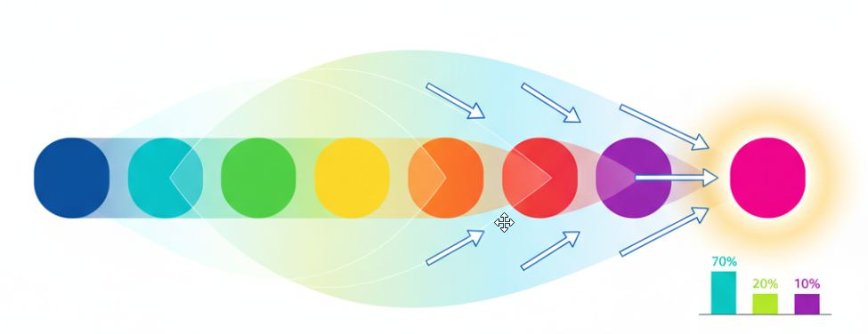
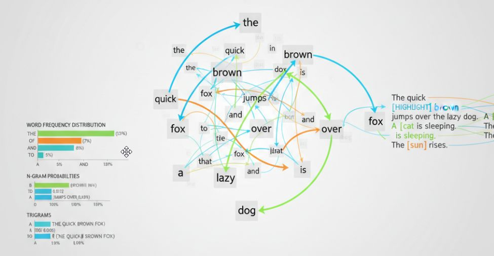
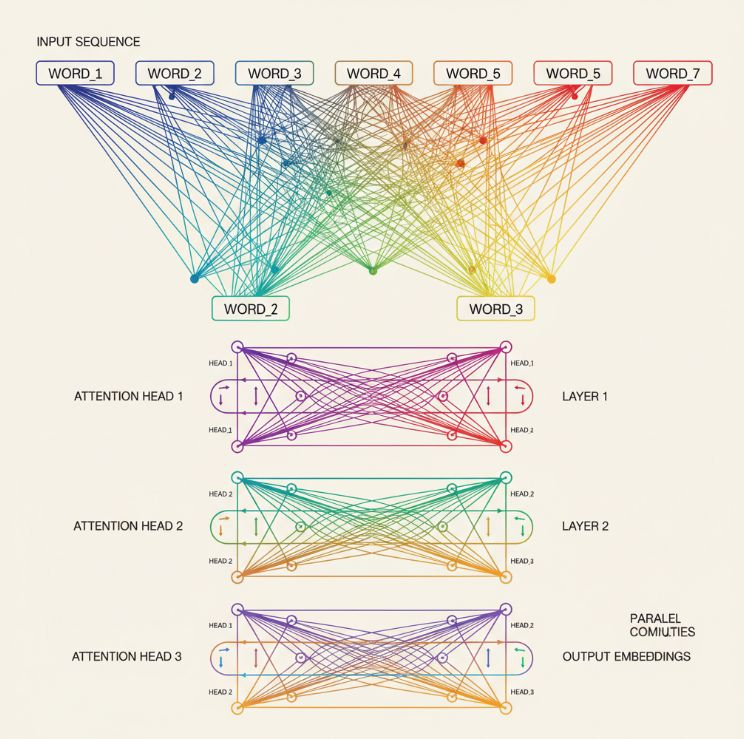
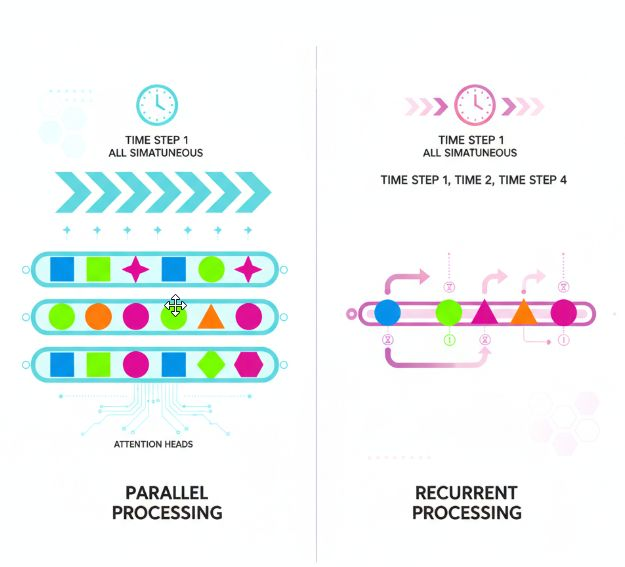
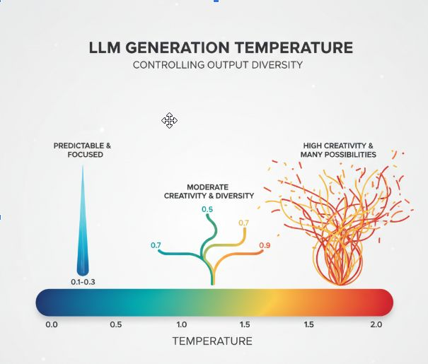
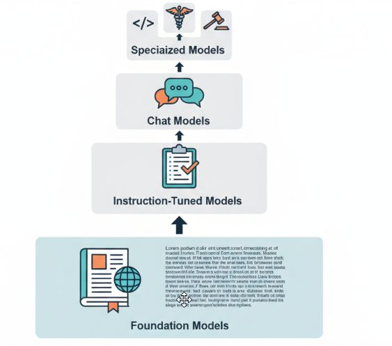

Это обзорная статья цикла «Базовый минимум» — по тезисам:
- большие языковые модели;
- архитектура;
- техники использования;
- тренды.
Видео версия (~9 мин): Смотреть на YouTube
Большие языковые модели (LLM)
Что это? - Это инструмент, далее возможности и применение
Что это? - Это инструмент, далее возможности и применение
Генерация текста
- Создание статей, историй, маркетинговых материалов
- Автоматическое составление отчётов и документации
- Творческое письмо и контент различных жанров
Ответы на вопросы
- Интеллектуальные чат-боты для поддержки клиентов
- Системы вопросов-ответов для поиска информации
- Виртуальные ассистенты для повседневных задач
Анализ и обработка языка
- Классификация текстов по категориям и тональности
- Суммаризация длинных документов
- Перевод между языками с сохранением контекста
Программирование и код
- Генерация кода по текстовому описанию
- Отладка и исправление ошибок
- Комментирование и объяснение сложных участков кода
Инструмент мощный — но важно понимать, как он устроен и где ломается.
Что это технически? - Огромная статистическая машина
Что это технически? - Огромная статистическая машина
Определение и принципы работы
Нейросетевые модели, обученные предсказывать следующий токен на основе контекста.
Используют статистические закономерности в языке для генерации текста.
LLM использует полный контекст для определения наиболее вероятного следующего слова.

Флоу предсказания токенов LLM
Входной контекст: «Карл у Клары украл…»
Анализ контекста:
- Карл (субъект)
- у Клары (у кого)
- украл (действие)
Предсказание: Модель анализирует все предыдущие токены и их связи, распознаёт паттерн известной скороговорки
→ «кораллы»
Вероятность: 85%

Трансформеры и архитектура
Механизм self-attention для обработки последовательностей (ну тут всё понятно — на самом деле нет).

Параллельная обработка данных вместо рекуррентной.

Многослойная структура с миллиардами параметров (тепловая карта весов).
Обучение на текстовых данных
- Обучение без учителя на миллиардах текстовых примеров
- Предобучение на общих данных с последующей специализацией
- Масштабирование данных и вычислительных ресурсов
Как использовать? - обзор техник работы с LLM
Как использовать? - обзор техник работы с LLM
Промпт-инжиниринг
- Искусство формулирования запросов для лучших результатов
- Структурирование инструкций с ролями, примерами и контекстом
- Итеративное улучшение запросов для точных ответов
Fine-tuning (дообучение)
- Адаптация модели под специфические задачи и домены
- Использование небольших наборов размеченных данных
- RLHF (обучение с подкреплением по обратной связи человека)
RAG (Retrieval-Augmented Generation)
- Расширение знаний модели через поиск в базе данных
- Комбинирование внешних источников информации с генерацией
- Уменьшение галлюцинаций через опору на проверенные факты
Chain-of-thought
- Пошаговое рассуждение для решения сложных задач
- Промежуточные вычисления и логические переходы
- Улучшение математических и логических способностей модели
Популярные модели
Популярные модели
GPT (OpenAI)
- Серия моделей от GPT-3 до GPT-5.4, лидеры индустрии
- Коммерческие API с широким спектром возможностей
- ChatGPT как массовый продукт на базе этих моделей
Claude (Anthropic)
- Фокус на безопасность и длинный контекст
- Конституционный подход к выравниванию с человеческими ценностями
- Способность обрабатывать большие объёмы текста (до 1М токенов)
LLaMA
- Открытая модель от Meta для исследовательского сообщества
- Основа для множества производных моделей (Alpaca, Vicuna)
- Компактные версии для локального запуска
Отечественные разработки
- YandexGPT с поддержкой русского языка
- GigaChat от Сбера для бизнес-применений
- Модели Vikhr и другие разработки для специализированных задач
Ключевые понятия
Ключевые понятия
Токен
- Минимальная единица текста для обработки моделью
- Может быть словом, частью слова или символом
- Примеры: «привет» = 1 токен, «непредсказуемость» = 2–3 токена
- Токенизация разбивает текст на последовательность токенов
Температура
- Низкая температура (0.1–0.3): предсказуемый, точный текст
- Средняя температура (0.7–0.9): баланс креативности и связности
- Высокая температура (1.5–2.0): творческий, но менее связный текст

Типы моделей по назначению
- Базовые (foundation): предобученные на больших корпусах текста
- Инструктивные (instruction-tuned): обучены следовать инструкциям пользователя
- Чат-модели: оптимизированы для диалогов и многошаговых разговоров
- Специализированные: настроенные под конкретные задачи (код, медицина, юриспруденция)

Контекстное окно
- Ограничение на объём текста, который модель обрабатывает за раз
- Различные техники расширения контекста (8K–100K токенов)
- Потеря информации при работе с длинными документами
Проблемы и ограничения
Проблемы и ограничения
Галлюцинации
- Модель может выдумывать несуществующие факты с уверенным видом
- Создание правдоподобной, но ложной информации
- Сложность верификации сгенерированного контента
Вычислительные ресурсы
- Требуются мощные GPU/TPU для обучения и инференса
- Высокие энергозатраты на обучение крупных моделей
- Стоимость разработки и поддержки инфраструктуры
Этические вопросы
- Предвзятость и стереотипы в обучающих данных
- Проблемы безопасности и генерации вредоносного контента
- Нарушение авторских прав и вопросы интеллектуальной собственности
Будущее и тренды
Будущее и тренды
Мультимодальность
- Работа с текстом, изображениями, аудио и видео
- Понимание и генерация контента в различных форматах
- Интеграция разных модальностей для комплексного понимания
Агенты на базе LLM
- Автономные системы для выполнения сложных задач
- Планирование действий и принятие решений
- Взаимодействие с внешними инструментами и API
Оптимизация моделей
- Квантизация и дистилляция для ускорения работы
- Разработка более эффективных архитектур
- Баланс между размером модели и её возможностями
Локальные решения
- Модели, работающие на персональных устройствах
- Конфиденциальность данных без отправки в облако
- Специализированное аппаратное обеспечение для LLM